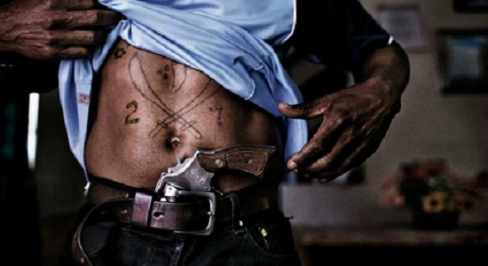

 Називају се и ,,људима крви“ и уједно су и најнасилнија банда (прилог бр.4). Они су криминалци специјализовани за насиље. Надгледају и спроводе законе и кодексе броја. Преговарају о проблемима у комуницирају између 26-ица и 28-ица. Члан ове банде постајеш само одузимањем туђих живота. Нису дозвоњени истополни односи због историје Нонголзе и Киликијана. Они су најтајанственији од свих банди и јако се мало зна о њиховој структури.